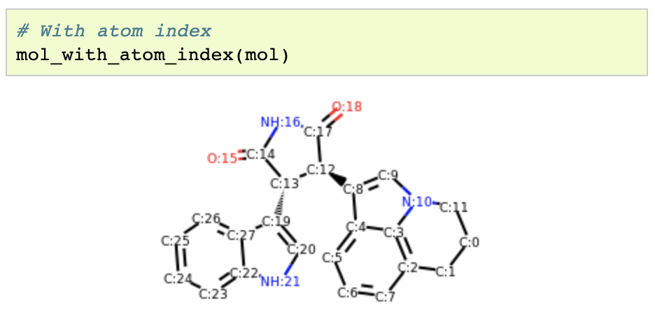
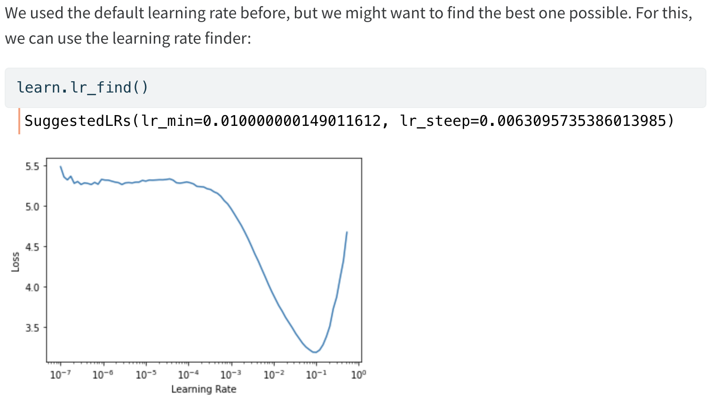
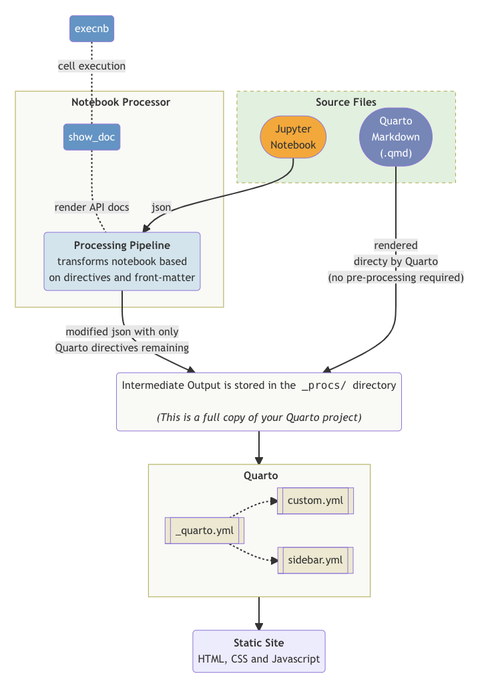
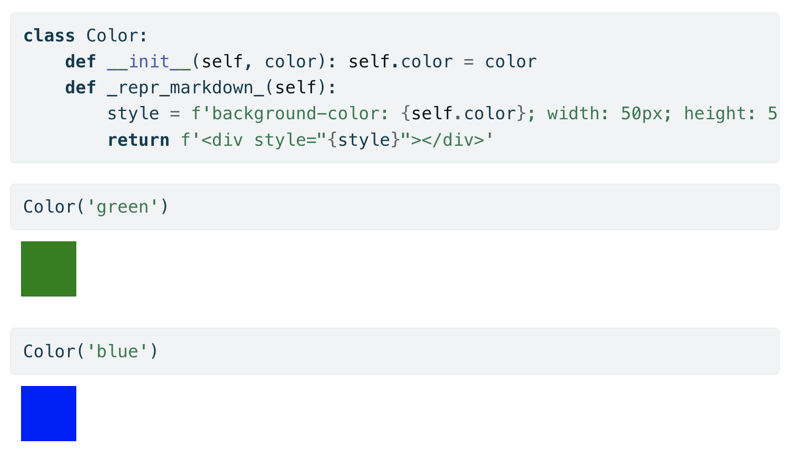

Notebook best practices
Notebooks are an incredibly powerful and flexible medium… which can be overwhelming. We just published an article in the nbdev docs sharing everything we know about writing great notebooks after years of working with nbdev.
Here are 3 tips to get you started. Check out the full article for more!

{kind=link}
1. Use Jupyter’s rich display features to supercharge your users
Jupyter lets your objects render themselves with rich formatting. Many libraries have taken advantage of this to include rich displays of their objects, which helps with prototyping, debugging, presenting your work, and makes the entire experience more delightful.
We highly recommend using these in your own notebooks, and creating rich displays of objects in your own libraries. Here are a few examples to get you started:




You can add rich representations to your own objects by defining a _repr_markdown_ method that returns markdown text (which may also include HTML/CSS). See the full Color example in the article to get started.
2. Use lots of code examples
…and convert some of them to tests using assertions. nbdev blurs the lines between code, docs, and tests. Every code cell is run as a test (unless it’s explicitly marked otherwise), and any error in the cell fails the test.
fast.ai’s vision augmentation notebook is a great example that also uses rich display features:
3. Know which form of notebook you’re writing
Decide which form of notebook you’re writing. We’re fans of the Diátaxis system which classifies documentation into four forms: tutorials, how-to guides, explanations, and references. They’ve laid this out beautifully in the following diagram:

Further reading
These are only 3 of many more best practices detailed in the full article. We also include a full example that converts a numpy docstring to a notebook-friendly format following these practices.
You can follow the conversation on Twitter:
Notebooks are an incredibly powerful and flexible medium… which can be overwhelming
— Wasim Lorgat (@wasimlorgat) September 19, 2022
Here's everything we know about writing great notebooks after years of working with #nbdevhttps://t.co/yihcwasDvd
Appendix: Marie Curie’s research notebook
I really love the preview image! It’s an excerpt from Marie Curie’s research notebook dated 19-21 January 1900. I could pick out a few words here and there: a l’air (looks), rien (nothing), alumin (aluminium), frod (cold), chauffé (heated), and parafin. Unfortunately, I don’t know much more than that. Please let me know if you do!